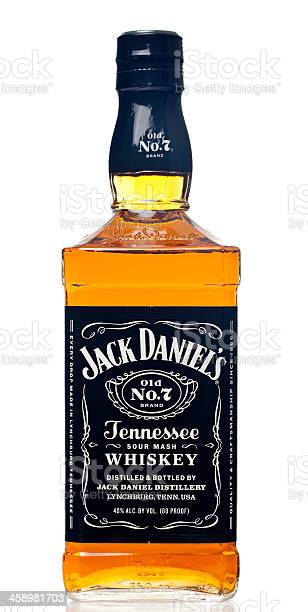

Opis strony
Witam na stronie drogich alkoholi
Alkohole – związki organiczne zawierające jedną lub więcej grup hydroksylowych połączonych z atomem węgla w hybrydyzacji sp3. Najprostsze i najczęściej spotykane w życiu codziennym alkohole to zawierające jedną grupę hydroksylową w cząsteczce pochodne alkanów o wzorze ogólnym CnH2n+1OH, czyli alkohole monohydroksylowe, na przykład metylowy, etylowy, propylowy. Analogiczne związki organiczne, w których grupa hydroksylowa połączona jest z węglem w hybrydyzacji sp2, to fenole (hydroksylowe pochodne benzenu i innych związków aromatycznych) lub enole (hydroksylowe pochodne alkenów).
Ze względu na obecność silnie elektroujemnego atomu tlenu i związanego z nim atomu wodoru alkohole tworzą wiązania wodorowe, ulegając asocjacji w większe struktury. W efekcie niższe alkohole mają wysokie temperatury wrzenia i małą lotność względem swojej masy[1]:
- metanol: Tw = 65 °C
- etanol: Tw = 79 °C
- propan-2-ol: Tw = 82 °C
- propan-1-ol: Tw = 97 °C
Wyższe alkohole mają właściwości fizyczne zbliżone do alkanów o podobnych masach molowych[1]. Niższe alkohole doskonale rozpuszczają się w rozpuszczalnikach polarnych (np. w wodzie), natomiast wyższe lepiej rozpuszczają się w rozpuszczalnikach niepolarnych (przeważa część hydrofobowa). Obowiązuje zasada podobne rozpuszcza się w podobnym.
